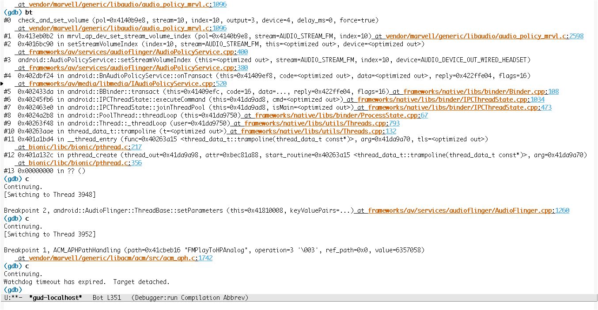

How to use gdb (in Emacs) for android
1 gdbserver
首先，需要在phone上用adb上启动gdbserver，这个用我写的增强版adb可以这样：
adb gdbserver -p mediaserver
它会自动找到mediaserver进程的pid（如果有多于一个mediaserver进程，它会让 你选——但这对mediaserver这样的进程没什么意义）。然后attach上，并在phone 和PC的:3333 tcp端口开始监听gdb的连接。PC这端是通过调用adb forward实现的。
2 agdb
通过我写的增强版agdb/agud的脚本，可以简单地在Emacs底下打 M-x gud-gdb
来调用，需要手动输入的命令是 agud mediaser ，同样，它会自动切换到
android 代码的根目录下，并在
./out/target/product/$TARGET_PRODUCT/symbols/system/bin 下找到
mediaserver 这个文件，最后真正启动的命令是：
/home/bhj/src/android/prebuilts/gcc/linux-x86/arm/arm-linux-androideabi-4.6/bin/arm-linux-androideabi-gdb -f -x /tmp/gdbclient.cmds ./out/target/product/pxa986ff/symbols/system/bin/mediaserver
gdb初始化执行的脚本 /tmp/gdbclient.cmds 的内容是这样的：
set solib-absolute-prefix /home/bhj/src/android/out/target/product/pxa986ff/symbols set solib-search-path /home/bhj/src/android/out/target/product/pxa986ff/symbols/system/lib:/home/bhj/src/android/out/target/product/pxa986ff/symbols/system/lib/bluez-plugin/:/home/bhj/src/android/out/target/product/pxa986ff/symbols/system/lib/drm/:/home/bhj/src/android/out/target/product/pxa986ff/symbols/system/lib/egl/:/home/bhj/src/android/out/target/product/pxa986ff/symbols/system/lib/hw/:/home/bhj/src/android/out/target/product/pxa986ff/symbols/system/lib/PowerDaemon/:/home/bhj/src/android/out/target/product/pxa986ff/symbols/system/lib/soundfx/:/home/bhj/src/android/out/target/product/pxa986ff/symbols/system/lib/ssl/:/home/bhj/src/android/out/target/product/pxa986ff/symbols/system/lib/valgrind/:/home/bhj/src/android/out/target/product/pxa986ff/symbols/system/usr/lib/alsa-lib target remote localhost:3333 #dir /home/bhj/src/android
3 compilation-minor-mode
这里我们用的是gud，而不是Emacs下支持多窗口的gdb，是因为我发现后者不太稳
定，性能也比较弱些。gud的bt列出来的文件不支持跳转，我们可以用 compilation-minor-mode 加上这个支持：

为了来回切换方便，我们把这个命令绑一个快捷键：
(global-set-key (kbd "M-s x") 'compilation-minor-mode)
所有增强脚本见我的配置环境。